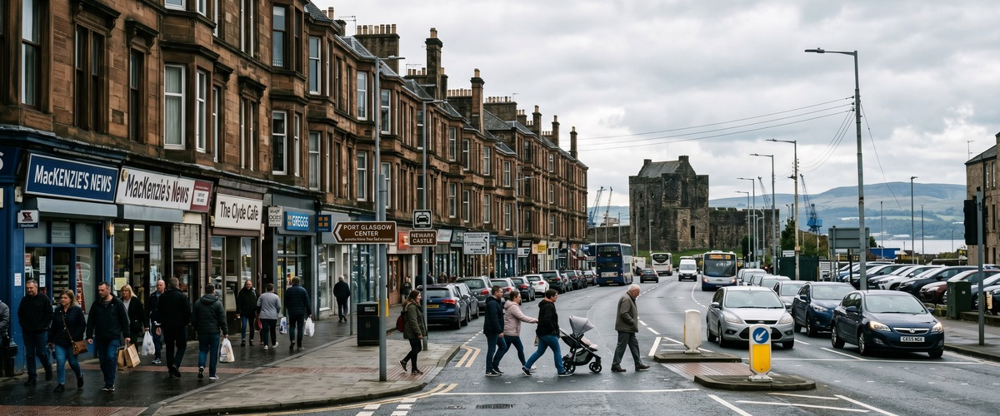
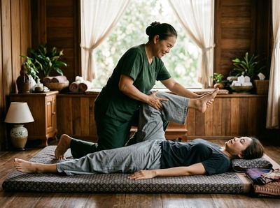
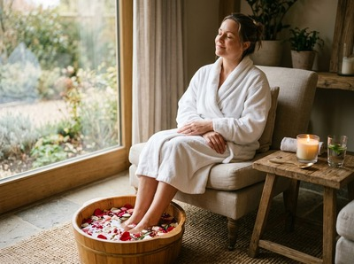

Newark Castle sits on the south shore of the River Clyde in Port Glasgow, one of Inverclyde's most historically layered neighbourhoods.

The area draws a mix of local residents, heritage visitors, and people who work along the A8 corridor connecting Port Glasgow to Greenock. If you're looking for thai massage near Newark Castle Port Glasgow, Thai Massage Greenock is your closest option for authentic, therapist-led treatment.
Port Glasgow has a working character shaped by its shipbuilding heritage and its community of long-established families and tradespeople. Physical work, long commutes, and the demands of industrial and service-sector jobs all build up in the body over time. That's exactly the kind of tension Thai Massage Greenock is designed to address.

Thai Massage Greenock is located on South Street in Greenock, just a short journey along the Clyde from Newark Castle. Jariya, the therapist behind every session, trained at Bangkok's renowned Wat Po temple and brings that authentic grounding to every treatment. Whether you carry tension across your shoulders from a day's work or you're seeking recovery after sport, there's a treatment suited to you.
You can book your session online and have a confirmed appointment ready before you make the trip.
The full range of treatments at Thai Massage Greenock includes:
From Newark Castle, the most straightforward route is by train from Port Glasgow station to Greenock Central, which takes around 5 to 10 minutes. The South Street studio is a short walk from Greenock Central station.
If you prefer the bus, McGill's service 533 runs from Port Glasgow to Greenock Bus Station approximately every 20 minutes, with a journey time of around 14 minutes. From Greenock town centre, South Street is easy to reach on foot.
By car, the A8 connects Newark Castle directly to Greenock in around 10 minutes depending on traffic. Parking is available in the South Street area.
Jariya holds traditional Thai massage certification from Wat Po in Bangkok, where the discipline has been practised and taught for centuries. Every client at Thai Massage Greenock receives a personalised session, with Jariya keeping detailed notes and building on what's been worked on before.

This is a therapist-led studio, not a chain. Clients from across Inverclyde, including many from Port Glasgow and the Newark Castle area, return regularly because the approach is consistent, personal, and genuinely effective. Book a session online to see for yourself.
Newark Castle is one of Scotland's best-preserved Renaissance castles, sitting directly on the Clyde shore in Port Glasgow. The town grew around it as a gateway for seagoing vessels unable to reach Glasgow due to shifting sandbanks, and later became a major shipbuilding centre. You can read more at Newark Castle on Wikipedia.
Thai Massage Greenock is located on South Street in Greenock, approximately 10 minutes by car from Newark Castle along the A8. By train from Port Glasgow station to Greenock Central, the journey takes around 5 to 10 minutes, followed by a short walk to the studio.
The train from Port Glasgow to Greenock Central is the quickest option, running regularly and taking under 10 minutes. Alternatively, McGill's bus service 533 runs from Port Glasgow to Greenock Bus Station roughly every 20 minutes with a journey time of about 14 minutes. Both options leave you a short walk from South Street.
Traditional Thai Massage or Thai Sports Massage tends to work well for people in physically demanding jobs. Traditional Thai Massage uses assisted stretching and acupressure to release deep muscle tension and improve range of motion, while Thai Sports Massage is targeted at recovery and injury prevention. Jariya will take time to understand what you need before the session begins.
Same-day availability depends on the current schedule, so it's worth checking the online booking form as early in the day as possible. You can book your appointment online at any time, and Jariya will confirm your session promptly.
Opening hours are listed on the Thai Massage Greenock website and can vary, so it's best to check before making the trip from Port Glasgow. Appointments are available across the week, including evenings, making it straightforward to fit a session around work or family commitments.